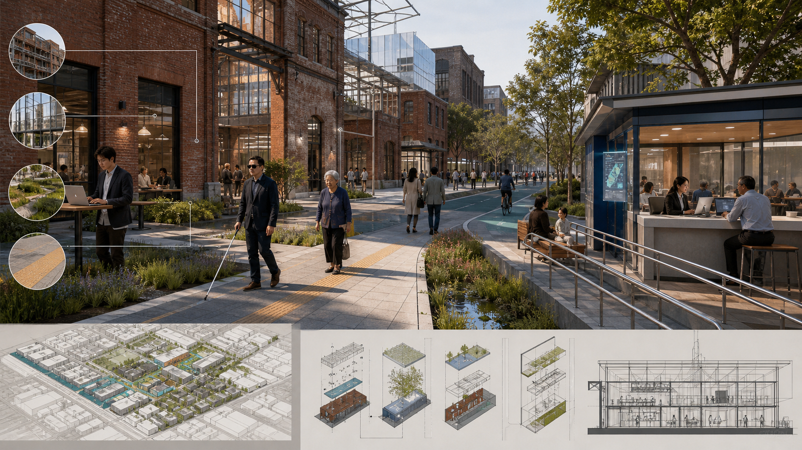

CIVICMIND JING-ZHANG
Governance as Infrastructure
For urban agents: make AI governance visible, understandable, challengeable and correctable.
One core judgement
An AI innovation district competes not only through models and firms, but through its capacity to make AI trustworthy.


One spine, two wings, three layers


Three key areas, three civic experiences


Who uses it
Residents and underserved groups
Understand AI decisions and retain voice, tactile, low-interface, human and remedy channels.
Founders and enterprises
Access clear scenario entry, data permission, compliance support, test rules and exits.
Researchers, visitors and institutions
Work on real problems, experience Jing-Zhang culture and collaborate with visible accountability.
Eleven scenarios form one service chain
Sensing grid · policy sandbox
Detect issues and compare impacts without triggering enforcement.
Detect issues and compare impacts without triggering enforcement.
Multi-agent collaboration · knowledge base
Support evidence and workflow; responsible staff sign final action.
Support evidence and workflow; responsible staff sign final action.
Public review · civic navigation · legal referral
Provide explanation, challenge and human-service routes.
Provide explanation, challenge and human-service routes.
Scenario market · trusted exchange · compliance accelerator
Enable auditable, reversible tests—not automatic certification.
Enable auditable, reversible tests—not automatic certification.
Community health sentinel
Identify aggregate service pressure without individual diagnosis or tracking.
Identify aggregate service pressure without individual diagnosis or tracking.
Shared safeguards
Minimum data, accountable owner, Human Review, stop conditions and rollback.
Minimum data, accountable owner, Human Review, stop conditions and rollback.
Public space becomes the governance interface

Three gates from concept to delivery

c.11.4 km²
provisional overall geometry11
accountable AI scenarios6
personas for inclusion testing